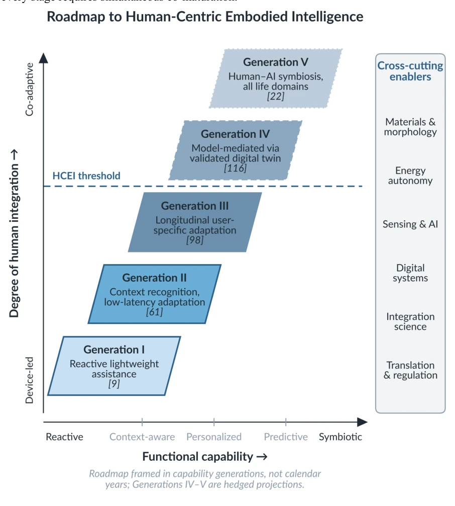

Fig. 3. The PCAA framework as an integrative co-design lens. The four functional pillars (Perception, Cognition, Actuation, Augmentation) are arranged as a vertical stack grounded in Physical Embodiment. Information flows upward from sensing to augmentation outcomes; energy flows downward from actuation into the coupled body; a closed adaptive feedback loop returns outcome data to the perception layer. Three representative devices are mapped to the framework to show how any soft wearable system can be located within it; the color- matched strip beneath each exemplar marks which PCAA pillars the device engages (gray = absent, hatched = minimal). The walking exosuit and soft glove trace the full perception-to- augmentation flow, whereas the shape-memory-alloy fabric-muscle suit has no dedica

Fig. 6. Roadmap to Human-Centric Embodied Intelligence across five capability generations. The x-axis tracks functional capability from reactive assistance (Generation I) to human–AI symbiosis (Generation V); the y-axis tracks depth of human integration from device-led to co-adaptive. Generations IV–V are rendered with dashed and dotted borders respectively to indicate their prospective, hedged status. The dashed HCEI threshold at the Generation III/IV boundary marks the first point at which a wearable system achieves longitudinal, user-specific adaptation. Six cross-cutting enablers (right) must advance